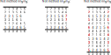

Appendix E. Framework Development
A.
Mandate
The framework has been developed following the passage of CRAG's Proposal H at the May 2017 Central Council meeting.
Proposal H stated that: 'The Decisions of the Central Council will be replaced with a simple and permissive descriptive framework for ringing with only the minimal detail required to maintain the historical record. The Executive will appoint a neutral and respected ringer who is demonstrably independent of those responsible for the current Decisions to complete this work. The leader may assemble a group of ringers to assist with this task and will consult widely on their proposals before presenting them to the Council in May 2018. The publication and maintenance of this framework will be the responsibility of the Executive.'
B.
Team
Tim Barnes was appointed by Christopher O'Mahony, CC President, to lead the development of the framework. Two groups were formed:
- A drafting group comprising Tim Barnes, Mark Davies, John Harrison, Graham John and Philip Saddleton developed the initial, draft language for the framework.
- A review group comprising Philip Earis, Andrew Johnson, Don Morrison, Peter Scott, Leigh Simpson, Richard Smith, Derek Williams and Robin Woolley reviewed the draft language and provided feedback.
Broader consultations were then held with the ringing community to gather feedback and further refine the framework.
C.
Goals
Description not prescription (the 'permissive' part of the CRAG proposal): Avoid arbitrary rules and value judgements. Seek to find the logical boundaries that define the limits of method ringing, and ensure the framework supports everything within these boundaries. The boundaries used are shown in Section B below.
Simple, generic and consistent (the 'simple' part of the CRAG proposal): The more straightforward the framework is, the more widely it will be understood across the ringing community and the more accessible it will be to new ringers joining the Exercise. Standardise terms and requirements where this increases simplicity while retaining historical meaning. However, it is also recognised that method ringing has inherent complexity resulting from both its mathematical foundation and its rich history, such that not all complexity can be eliminated.
Support all Lengths of ringing: The CRAG mandate calls for a simple and permissive descriptive framework for ringing, not just Peal ringing. Cover all Lengths -- from Short Touches to Record Lengths.
Continuity: Most standard Methods and Performances should continue to be described as they are today, or with limited alterations where there are clear standardisation or simplication benefits. This is the 'maintain the historical record' part of the CRAG proposal.
Define and explain: Terms used in the framework should be clearly defined. Include examples and explanations to assist in the understanding of the framework. For ease of reference, capitalise terms that are defined in the framework whenever they are used elsewhere in the framework.
D.
Boundaries
The scope of the framework is method ringing (also called scientific ringing). It does not cover call (or called) changes, nor tune ringing. Cylindrical ringing, where a bell can ring twice in some Rows, and not at all in others, is similarly out of scope.
In method ringing, the same set of bells rings in every Row, with each bell ringing exactly once in every Row.

In method ringing, each bell rings in a different Place in the Row to every other bell.
A Change may be any transformation of one Row to the next. This results in the definition of Jump Changes and Identity Changes in the framework. The term 'Adjacent Change' has also been introduced to be equivalent to the previous definition of 'change' in Decision (E) A.1.
In general, Methods are sequences of Changes that have been given names and which are recorded in the Central Council's Methods Library. Any sequence of Changes should be able to be named as a Method.
A Block of Rows is True if it comprises 0 to n Extents, plus 1 optional partial Extent. In other words, a Block of Rows is True if either (a) all of its Rows are distinct (only occur once) or (b) when the Block is longer than an Extent, any Rows that remain after removing all Extents are distinct. The location of individual Rows within a Block of Rows does not have any bearing on truth.
Note that the above is subject to (a) treatment of any Cover Bells in the Row (see 7. below), and (b) the related concept of 'Accepted Truth' as defined in the framework.
A Row may include one or more Cover Bells. A Place that is occupied by the same Cover Bell in every Row of a Block (such a Place is referred to in the framework as a Fixed Place) is excluded when determining truth. Similarly, if Method(s), and/or Method(s) and Call(s), cause a bell to remain in the same Place in every Row of a Block, then this Place is also a Fixed Place and is excluded when determining truth.
E.
Additional Considerations
We assume the intent of CRAG Proposal H is for the framework to replace Decisions D, E, F, G, I and J. Other Central Council Decisions are considered outside the scope of the framework.
Ringing of all Lengths on all Stages should be treated alike for simplicity, consistency and permissiveness. The definitions should be relevant and applicable to all ringing, not just Peals. For example, the definition of True applies equally to Short Touches, Quarter Peals and Peals, and if 5000 changes is a Peal of Major, then it is also sufficient for a Peal of Minor.
The Conditions for Peal Ringing in the current Decision (D) are being replaced by Performance Reporting requirements. Under this new permissive framework, bands decide what they wish to ring, and the onus is on them to determine if a Performance merits publication. The Performance Reporting requirements include disclosures for when the ringing is not covered by the framework, or when it is covered by the framework but includes characteristics that differ from established norms (for example, not starting and ending in Rounds). These disclosures can then be used in subsequent analyses of ringing Performances.